Jumbotron 资产读图页
本页用于人工检查本轮生成的状态徽标和 rider 动图。图像本体不含英文、中文、数字、标点、logo 或水印。
九宫格状态徽标

- 顺序为从左到右、从上到下：待机、奔跑、冲刺、减速、受阻、进站、接管、完成、失联。
- 所有状态只用符号区分，不把英文标签烘焙进图片。
三状态 rider 动图
stay
walk
run
- 动图基于原始 PNG 多帧生成，不重绘、不调色、不改变 rider 本体风格。
- 先按透明主体中心归一，再加轻微位移和旋转，避免 stay 左侧空白导致切换跳动。
- 运行态频率最高，步行态中等，静止态只保留很轻的呼吸感。
运行接入
- runtime 资产目录：
/media/lemonhdl/Shared/Software_Engineering/ARY/PoC-GRS-001/assets/jumbotron - 协作资产目录：
/media/lemonhdl/Shared/Software_Engineering/ARY/Week2-Jumbotron/assets/collaborator-resource-2026-06-12 - 证据 JSON：
/media/lemonhdl/Shared/Software_Engineering/ARY/Week2-Jumbotron/assets/collaborator-resource-2026-06-12/jumbotron-generated-assets-summary.json